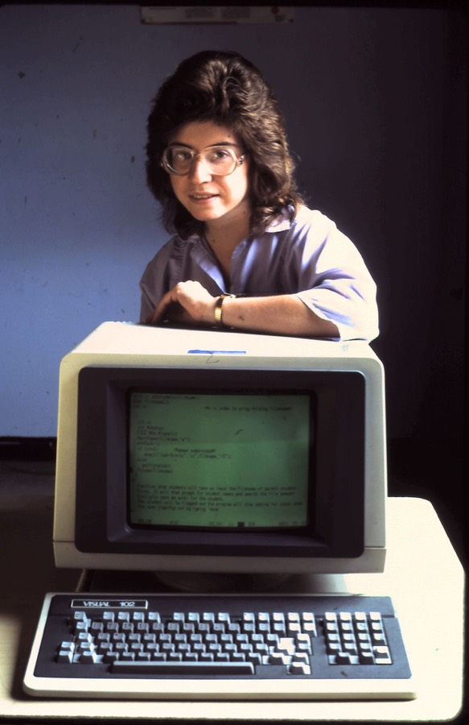
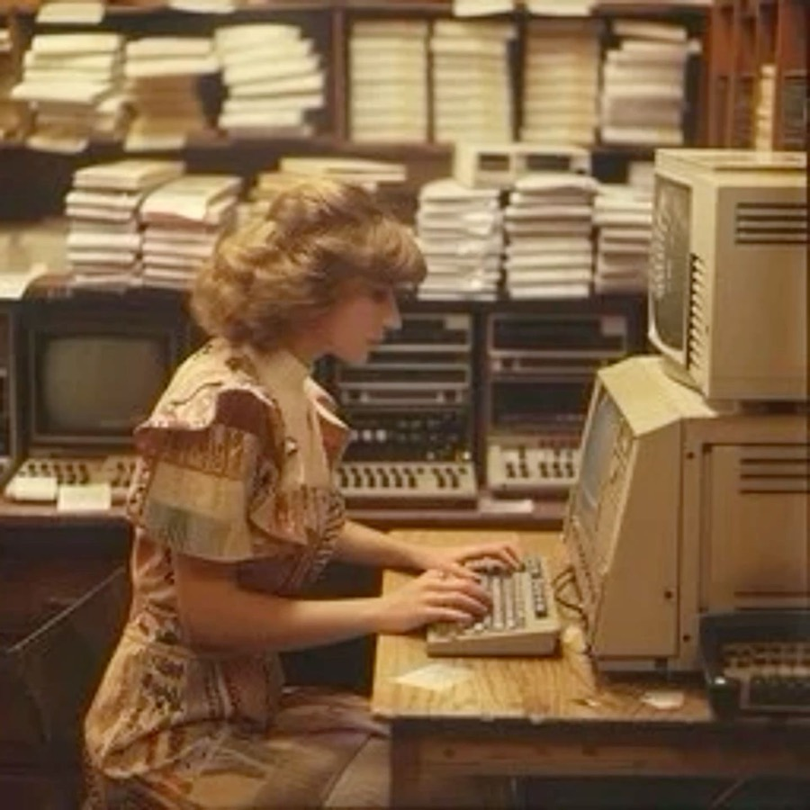
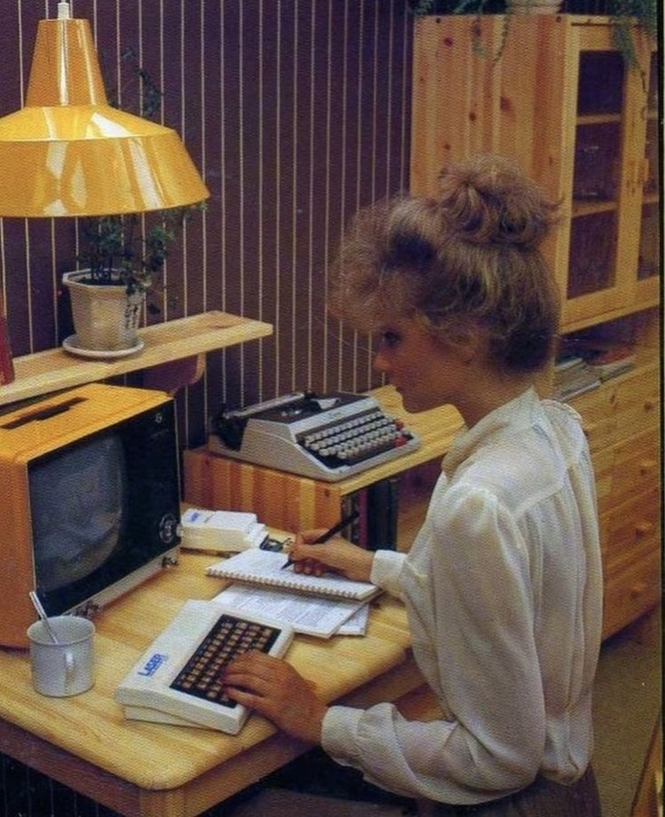
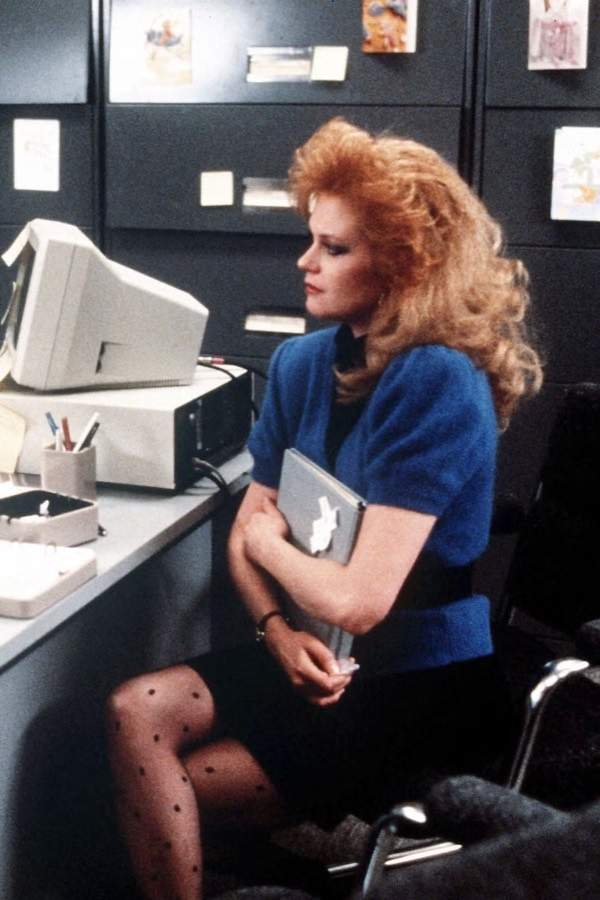
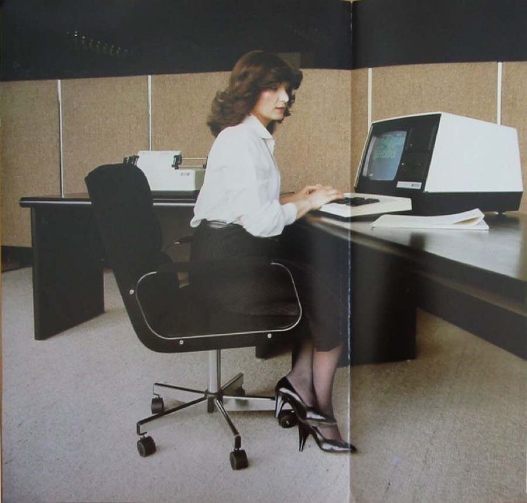
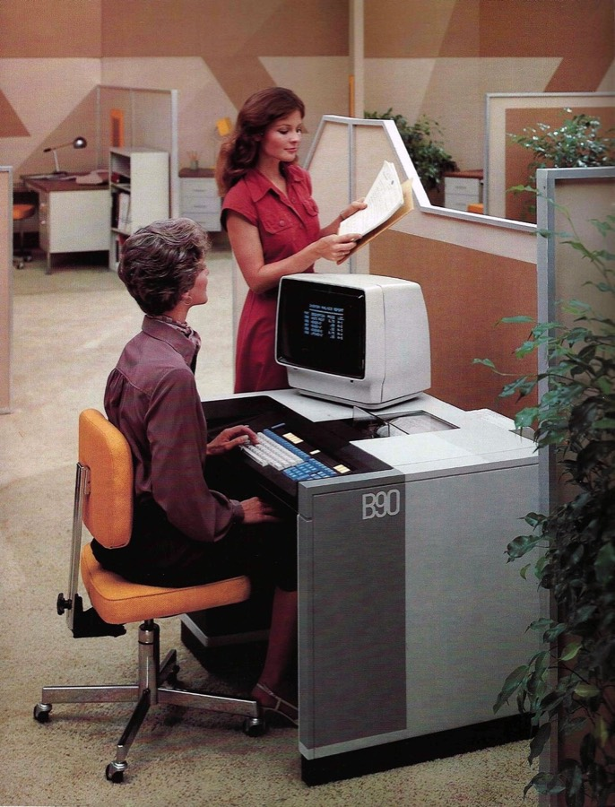
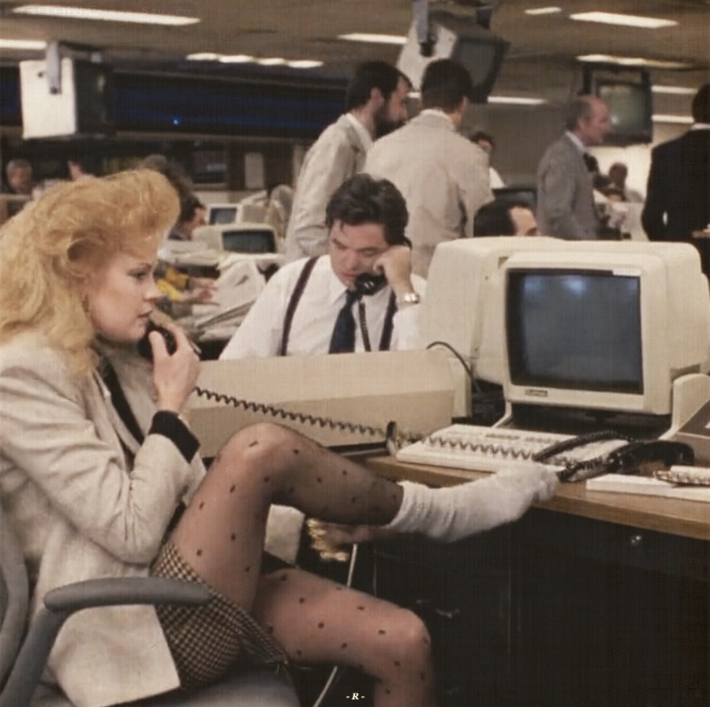
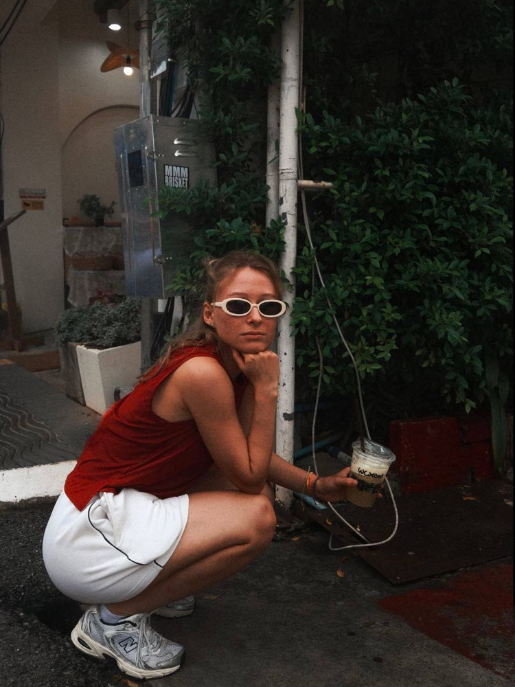
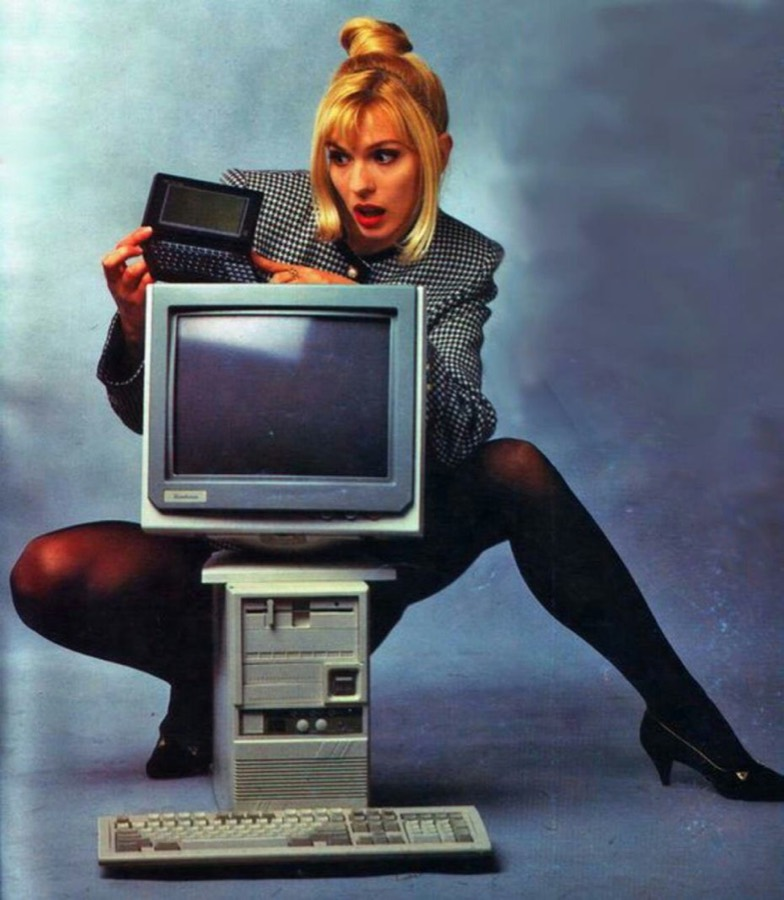

Я маркетолог и код не пишу ВООБЩЕ, а за меня щас работает отдел из 18 агентов (звучит пафосно, но по факту это папка на компе и куча файлов с правилами))
В интенсиве на своих задачах показываю, как собрать такого помощника себе, чтобы тексты, таблицы, карусели и поиск клиентов делал он, а ты только жал «отправить».
Чат советует, а дальше всё руками, а агент сам берёт и делает.

Конечно! Вот план на месяц:
| Неделя | Тема |
|---|---|
| 1 | Познакомьтесь с аудиторией |
| 2 | Полезный контент |
| 3 | Вовлекающий контент |
| 4 | Продающий контент |
…и дальше всё руками. Закрываешь вкладку, ничего не меняется 🤡
контент-план-декабрь.mdТы только проверяешь и жмёшь «отправить» ✨
листай дальше ↓
Мой обычный день. Сначала я его обучила и настроила, и докручиваю каждый день, когда он косячит, вот этому и буду учить.

Агент сам просыпается и собирает пост для финтех-клиента: курс валют, гороскоп, картинка. Присылает мне в телегу, я проверяю и выкладываю.
Накидываю ему голосовые: «надо ТЗшку дизайнеру, ответить клиенту, посчитать, сколько я потратила». Он раскладывает по доске задач и делает то, что может сам.
Собирает карусели для моего медиа, по 3 в день, и рилсы из них.
Вываливаю ему всё, что в голове на завтра, и утром у меня три дела, с которых начать.





| Дата | Что открывается | Уроков |
|---|---|---|
| пн 7.12 | неделя 1 | 4 |
| пн 14.12 | неделя 2 | 5 |
| пн 21.12 | неделя 3 | 4 |
| 28.12–3.01 | праздники: можно догнать, новых уроков нет (оливье важнее) | — |
| пн 4.01 | неделя 4 | 4 |
| пн 11.01 | бонусная неделя | 5 |
| пн 18.01 | неделя 5 «Личный бренд в инсте» | 4 |
Всего 26 уроков. Доступ остаётся, так что проходишь в своём темпе, никто не гонит.
когда обучение по клоду?
научи меня Клоду
как ему правильно писать, чтобы выдавал по делу, а не воду
хочу контент-план, всё подробно, а я выполняю
а нужна ли подписка? что даёт платная?
а можешь со мной?
а сделай мне так же
поэтому и собрала всё в одно место

Один раз, без подписки. Жми кнопку, чтобы попасть в канал со всеми новостями, а как я живу с агентом, смотри в инсте @soldysofa.

25 000 до 30.11, потом 35 000, бронь места 10 000
По SMM с автоматизацией работы «до первого клиента», 6 недель с 8.12, я рядом на каждом шаге.
один созвон, 10 мест в декабре
Папки, доска задач, Клод узнаёт тебя и забирает одну рутину. Неделю после отвечаю на вопросы.
два созвона, 3 места в декабре
То же плюс порядок в команде и агент с помощниками на ваши задачи. Две недели вопросов.
Пиши в канал или в личку @lordywood, расскажу, что подойдёт именно тебе.